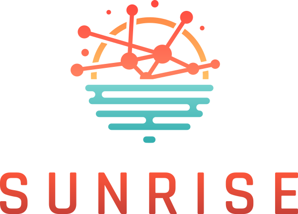
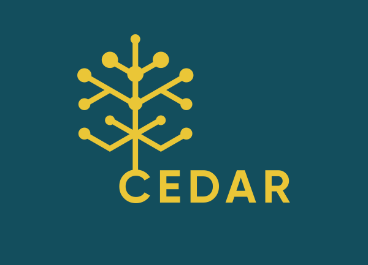
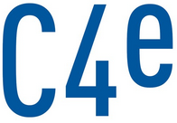

Strategies and Technologies for United and Resilient Critical Infrastructures and Vital Services in Pandemic-Stricken Europe (SUNRISE). Horizon Europe, European Commission. Funding: 10 Million euro. Position: UPM Work Package Lead (WP1, WP2), Spanish Cluster Coordinator
Ongoing Projects


Common European Data Spaces and Robust AI for Transparent Public Governance (CEDAR). Horizon Europe, European Commission. Funding: 10 Million euro. Position: Work Package Lead (WP2).
Two problems still open in relevance logic: semantics for E mingle and semantics for Disjunctive Syllogism as a rule of proof. Ministerio de Ciencia e Innovación, Spain. Principal Investigator: Gemma Robles. Position: Work Team
Past Projects

CyberSecurity, CyberCrime and Critical Information Infrastructures Center of Excellence (C4e). European Union. Position: Collaborator
Self-determination, Counter-intervention and humanitarian intervention in Syria and Yemen. An analysis through Michael Walzer’s theory. Research group Observatorio Público. Tecnológico de Antioquia. Funding: 57.220.000 Colombian pesos. Principal Investigator: Miguel Paradela López, Tecnológico de Antioquía. Position: Researcher
BINSAL Project. European Regional Development Fund (ERDF) project between Portugal and Spain. Total funding: 4.8 Million euro. Position: Junior Project Manager
Study of the setted boundaries of ethnic identities in indigenous and migrant minorities. Research group Observatorio Público. Tecnológico de Antioquia-IU. Funding: 49.760.000 Colombian pesos. Co-researcher: Alexandra Jima González. University of Salamanca. Co-researcher: Larisa Lara. University Paris VII. Position: Collaborator